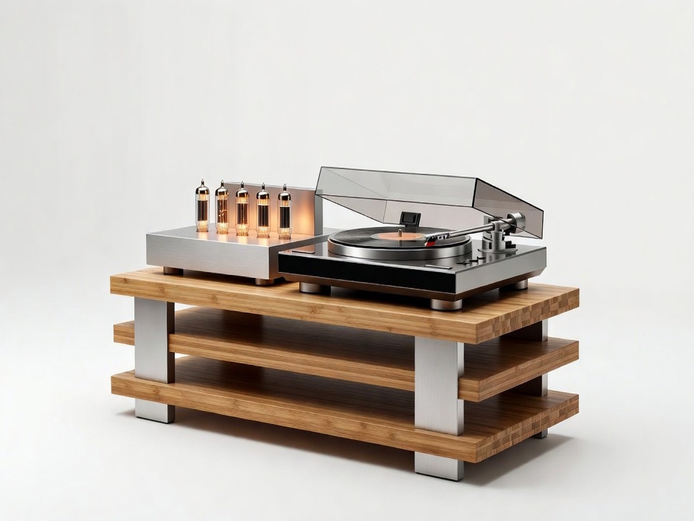
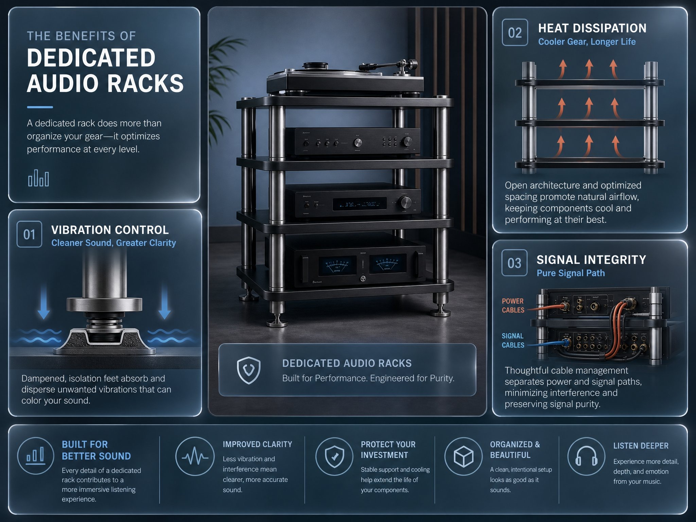
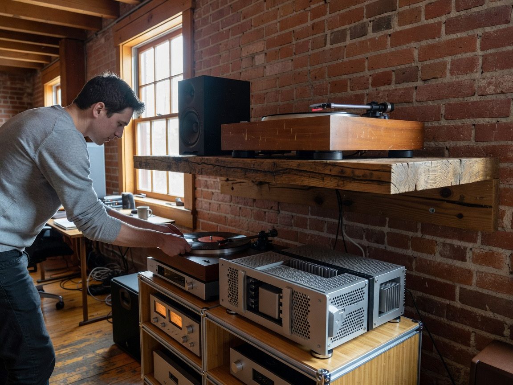
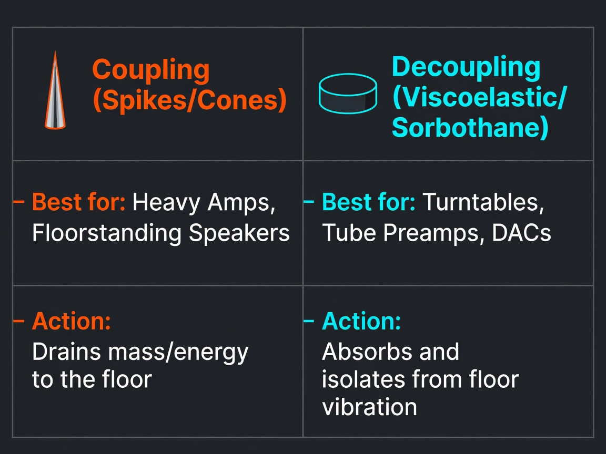
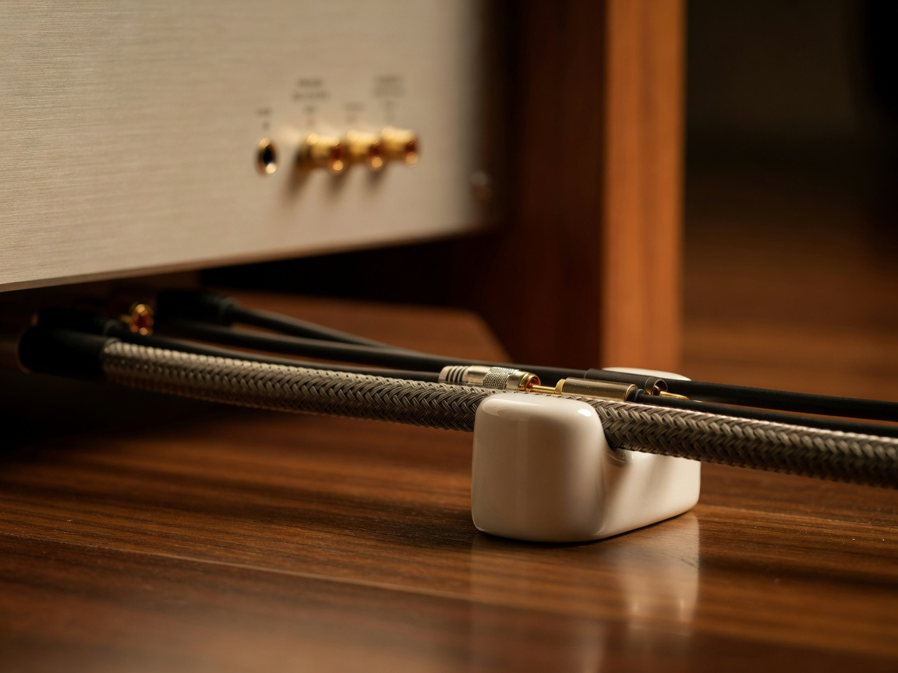
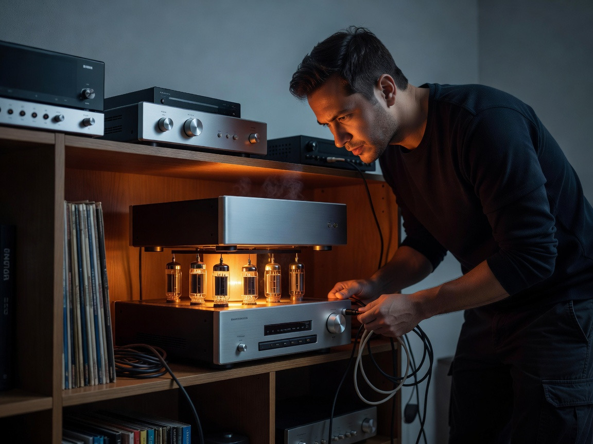

Hi-Fi Audio Racks & Accessories Guide: Features and Buying Tips

Walk into any serious listening room in Ottawa, from a Glebe condo to a Kanata basement build-out, and one piece of gear quietly does more than people give it credit for: the rack. The cabinet. The thing your amp sits on. We tend to obsess over speakers, DACs, cartridges, the latest tube rectifier from some boutique outfit in Quebec, and then we plunk the whole signal chain onto an IKEA shelf and call it a day. That's the part that's worth rethinking.
A proper hi-fi rack is a vibration-control device first and a piece of furniture second. Everything from soundstage depth to bass articulation can shift, sometimes subtly and sometimes dramatically, depending on what's holding your gear. The accessories that go along with it (isolation footers, cable lifters, dressing tools) do the cleanup work the rack alone can't.
Let's get into where the money actually pays off, and where the audiophile world is still selling fairy dust.
Why Dedicated Audio Racks Matter for Sound Quality

Plenty of folks dismiss racks as pure aesthetics. The figures suggest otherwise. Reviewers at Stereophile and What Hi-Fi have documented measurable changes in frequency response when a component is moved from a flexible surface to a rigid, properly isolated support. Whether you hear the difference depends on your system's resolving power and, frankly, your willingness to listen for it.
Resonance and Vibration Control
Every transformer hums. Every speaker pressurizes the room. That mechanical energy travels through the floor (especially the hardwood floors so common in older Ottawa homes) and back up into your gear. A dedicated rack with damped feet and decoupled shelves interrupts that loop. Turntables benefit the most. Tube amps a close second.
Heat Dissipation and Component Safety
Stacking a Class A amp on top of a preamp is asking for trouble. Open-frame designs with generous shelf spacing let warm air escape, which extends tube life and keeps capacitors from cooking themselves over a long winter of indoor listening.
Signal Integrity and Noise Floor
Tidy routing matters. When power cords and signal interconnects are crossed or coiled together inside a flimsy cabinet, induced noise creeps in. A purpose-built rack gives you separation between high-current and low-level lines, which lowers the noise floor in ways you'll notice on quiet passages.
How Rack Materials Affect Performance
Material choice isn't dogma, it's a trade-off between stiffness, mass, and damping behavior.
Bamboo and Hardwood Shelving
Bamboo, used famously in the Atacama Evoque line, has a natural damping characteristic that softens high-frequency resonance. Solid maple and walnut do similar work, with the bonus of looking right at home in a mid-century Ottawa living room.
MDF and Damped Composites
Medium-density fiberboard isn't glamorous, but when paired with constrained-layer damping it punches well above its price. Solidsteel's S-series racks use painted aluminum tubes filled with damping compound and MDF shelves rated for serious weight, easily holding a 130-pound monoblock without flex.
Steel and Aluminum Frames
Steel adds mass. Aluminum adds rigidity without ringing, especially when tubes are filled or sand-loaded. The premium tier, including Harmonic Resolution Systems and Solidsteel's Hyperspike range, combines steel frames with multi-layer shelves engineered to dissipate broadband vibration.
Here's a quick frame of reference for shoppers cross-shopping local dealers:
| Tier | Typical Material | Approx. Price (USD) | Shelf Capacity |
|---|---|---|---|
| Entry | MDF + Steel | $300–$700 | 40–60 lbs |
| Mid | Bamboo + Aluminum | $800–$1,800 | 80–110 lbs |
| Reference | Multi-layer composite + Steel | $2,500+ | 130–180 lbs |
Rack Configurations for Ottawa Listening Rooms

Room shape dictates rack shape, and Ottawa homes are all over the map: narrow Centretown row houses, sprawling Orleans rec rooms, lofted Hintonburg conversions.
Modular Stackable Racks
These are the workhorses. Start with three shelves, add more when the collection grows. Quadraspire and Atacama both build modular systems that grow with your gear.
Wall-Mounted Supports
Underrated for turntables. A wall shelf decouples the deck from the floor entirely, which is a godsend if you live above a busy street or share walls with neighbors who close doors with conviction.
Fixed-Shelf Audiophile Towers
Built-to-spec, often with fixed shelf spacing tuned to common chassis heights. Less flexible, but mechanically very stable, a strong choice for a reference system.
Essential Audio Accessories Worth the Investment
Not every accessory earns its place. Some genuinely change the sound. Others change your wallet.
The categories that consistently deliver, in our experience and in the wider audiophile press:
- Isolation footers under sources: Putting IsoAcoustics, Stillpoints, or Townshend Pods beneath a turntable or DAC tightens bass and reveals low-level detail. The effect is most obvious with vinyl playback.
- Vibration-damping platforms: A constrained-layer platform between the shelf and a heavy amp can clean up midrange congestion in busy passages.
- Cable management sleeves and separators: Keeping power away from signal isn't an upgrade, it's hygiene.
- Anti-static record brushes and stylus tools integrated into the rack zone: Boring, but they protect a $1,500 cartridge from a $5 piece of dust.
Isolation Footers and Pucks

The decoupling-versus-coupling debate will outlive us all. Both schools work; what matters is matching the device to the component. Heavy amps generally prefer coupling (spikes, points). Lighter, sensitive sources (turntables, tube preamps) prefer decoupling (sorbothane, viscoelastic pucks).
Cable Lifters and Elevators
I suspect these are 80% psychology and 20% RF mitigation, but ceramic or wooden lifters do reduce static coupling on long runs across carpet. Worth trying. Not worth mortgaging the house.
Cable Management and Routing Tools

Velcro ties, woven sleeves, and proper strain reliefs. The least sexy upgrade in audio. Also one of the most consequential for long-term reliability.
How to Match a Rack to Your Components and Budget
A rack rated for 50 pounds per shelf is not the rack for your 90-pound monoblocks. Sounds obvious. People still get it wrong.
Weight Capacity and Shelf Spacing
Measure your tallest chassis, add four inches of breathing room, and double-check the spec sheet. Tube amps need more vertical clearance than the manufacturer's photo suggests.
Turntable, Tube Amp, and Reel-to-Reel Needs
Turntables want isolation and a level surface. Tube amps want ventilation and mass. Reel-to-reel decks (which are quietly making a comeback among Ottawa collectors) need depth, real depth, the kind most consumer furniture doesn't offer.
Entry, Mid, and Reference Tier Picks
Entry-level buyers should look at Pangea or the lower Solidsteel lines. Mid-tier listeners get serious returns from Atacama Evoque or Quadraspire SVT. Reference-tier shoppers move into HRS, Fern & Roby, or custom Ictra builds.
What to Check Before Buying in Ottawa
Room Humidity and Hardwood Floors
Ottawa winters are brutally dry, summers humid. Solid wood racks expand and contract. Engineered bamboo and composite shelves handle the swing better.
Local Dealer Auditions and Delivery
Whenever possible, audition. A 200-pound rack is not something you want to return-ship to Toronto.
Compatibility With Existing Furniture
Match wood tones, sightlines, and column geometry. A reference rack that looks like a science experiment in a heritage Sandy Hill living room defeats half the point of owning beautiful gear.
Common Mistakes Audiophiles Make With Racks and Accessories

Three patterns we see again and again:
- Spending on premium racks before fixing room acoustics. Bass traps and first-reflection panels come first. Always.
- Stacking components directly on top of warm amplifiers. Heat kills electrolytics, full stop.
- Buying isolation footers without knowing what they're isolating from. Coupling and decoupling solve different problems.
Where the Hi-Fi Accessory Market Still Falls Short
Frankly, the accessory category has lazy spots. There aren't enough stylish, practical storage solutions for vinyl and reel-to-reel collections that look like furniture rather than data-center leftovers. Universal remotes with real, tactile metal knobs that work across vintage and modern preamps barely exist. Cleaning stations that integrate cleanly with a rack instead of cluttering a side table? Almost nonexistent. The market chases exotic cables while ignoring the practical, ergonomic upgrades that would make daily listening better. Someone's going to fill that gap. We hope it's soon.
FAQ
Does an audio rack actually improve sound quality? expand_more
Yes, especially for turntables, tube components, and resolving systems. The improvement comes from reduced resonance and a lower noise floor, not from anything mysterious.
How much should I spend on a rack relative to my system? expand_more
A reasonable rule of thumb is 5–10% of total system cost. Below that you're under-supporting; above that you're chasing diminishing returns until you hit reference territory.
Are isolation footers worth it on a budget system? expand_more
Often more cost-effective than a full rack upgrade. Start with footers under your source component.
Can I just use a sturdy bookshelf? expand_more
You can. It won't damage anything. But you're leaving performance on the table, particularly with vinyl.
Conclusion
A good rack is invisible work. It doesn't dazzle anyone at a listening session, and nobody walks in praising your shelf composite. What it does is let everything else you've spent money on actually perform. For Ottawa listeners juggling humidity swings, hardwood floors, and rooms that weren't designed for high-end audio, the right support system is one of the highest-leverage investments in the chain. Pair it with thoughtful isolation, honest cable management, and the discipline to skip the snake oil, and the system you already own will sound like the one you've been chasing.